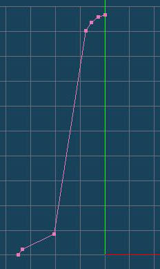
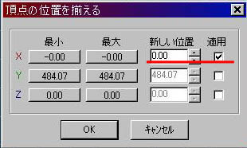
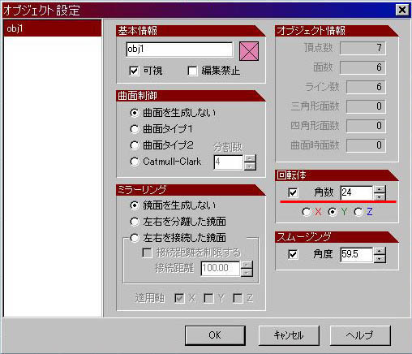

工程１
|  |
今回は「回転体」を使ってカラーコーンを制作します。 「コマンドパレット」の「面の生成」を選択します。すると「サブパネル」が表示されるので、「辺」を選択してください。 |
工程２
|  |
正確な回転体を制作するために、頂点の位置を正確にY軸に合わせます。 回転体の中心となる頂点（この場合、一番上の点）を「選択」してください。 「選択部処理」メニュー→「頂点の位置を揃える」を選択してください。左図のようなウィンドウが表示されます。 |
工程３
|  |
「回転体」の実行です。「オブジェクトパネル」の「obj1」をダブルクリックして「オブジェクト設定」を表示してください。 「回転体」と書かれた項目があるのでチェックします。「角数」を「24」に変更します。この「角数」とは、回転体の分割数を表しています。 入力が終わったらOKボタンを押してください。 |